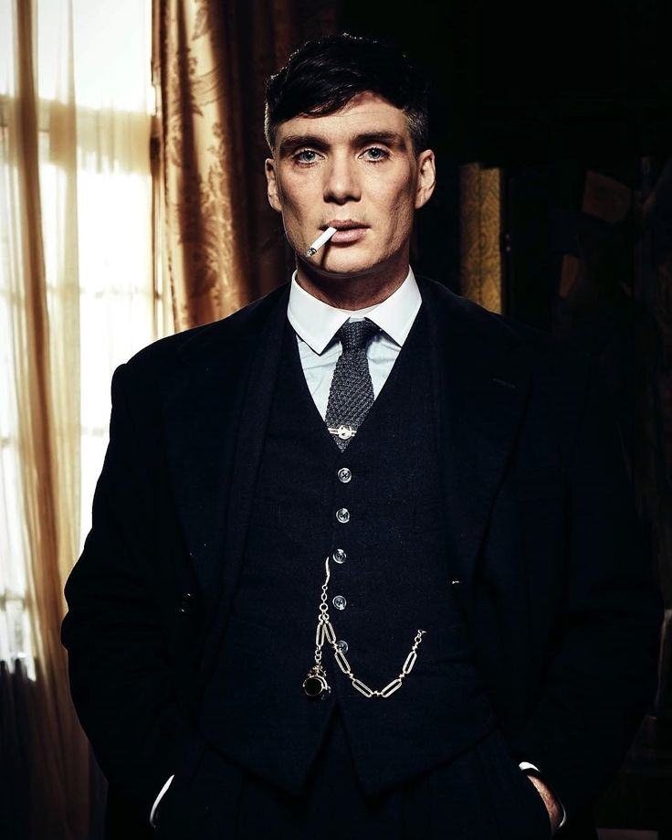
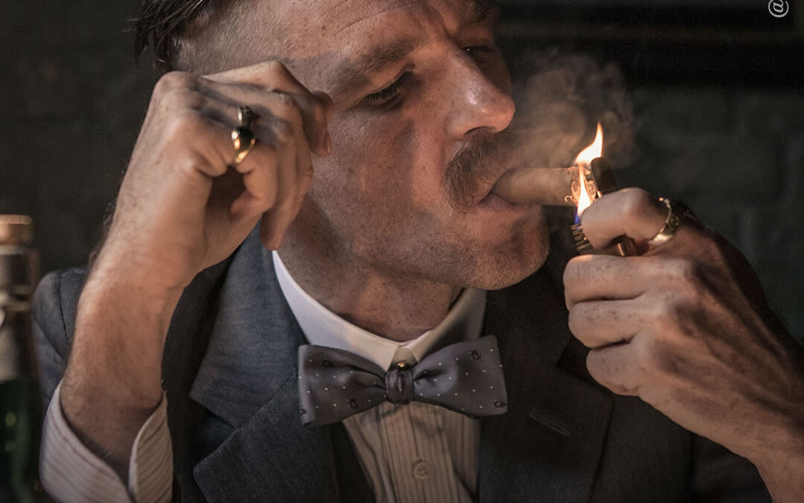
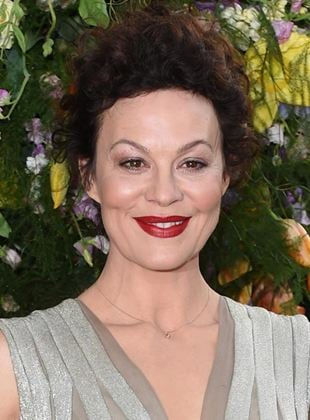

Elenco

Thomas Shelby (Cillian Murphy)
Thomas Shelby é o patriarca da Família Shelby, a família mafiosa envolvida com bebidas, apostas e a gangue criminosa conhecida como Peaky Blinders. Um veterano da Primeira Guerra Mundial, ele é bastante pragmático e pé-no-chão, sempre interessado em aumentar seu poder e melhorar a situação de sua família. Mas Thomas Shelby também tem um lado sensível, marcado por uma vida de traumas e desilusões. Quem o interpreta na série é Cillian Murphy. Nascido na Irlanda em 1976, ele se tornou um dos rostos mais conhecidos do Reino Unido por estrelar obras como Extermínio (2002), Dias Selvagens (2003), Voo Noturno (2005), Um Lugar Silencioso - Parte 2 (2021), entre muitos outros - além de ser presença constante nos filmes de Christopher Nolan, tendo aparecido na Trilogia Batman, A Origem (2010) e Dunkirk (2017). Ele será protagonista do próximo filme do cineasta, onde viverá J. Robert Oppenheimer, um dos principais cientistas por trás da criação da bomba nuclear.

Arthur Shelby Jr. (Paul Anderson)
Carismático e briguento, Arthur Shelby é praticamente um hooligan, sempre criando algum tipo de confusão, e louco para sair na mão com alguém. Ele é parte do alto escalão dos Peaky Blinders, e seu talento para violência serve tanto para ajudar a intimidar em negociações tensas, quanto para complicar a vida do irmão Thomas Shelby e dos demais, já que constantemente toma decisões impulsivas. Arthur Shelby Jr. é interpretado por Paul Anderson. Ainda que o personagem seja mais velho que Thomas Shelby, o ator é um pouco mais novo que Cillian Murphy, tendo nascido em 1978, na cidade de Londres, Inglaterra. Peaky Blinders é seu papel de maior destaque, mas Paul Anderson tem algumas outras participações em produções britânicas, como nos filmes Sherlock Holmes: O Jogo de Sombras (2011), Robin Hood: A Origem (2018) e Vingança FM (2019), além de pequenas pontas em séries como Doctor Who e Os Assassinatos de Midsomer. Com o sucesso de Peaky Blinders, em breve será possível ver Paul Anderson em mais obras, começando por O Beco do Pesadelo, novo filme de Guillermo del Toro.

John Shelby (Joe Cole)
O terceiro irmão Shelby combina características de Thomas e de Arthur: John Shelby é estrategista o bastante para conseguir lidar com a administração da organização criminosa, mas também é violento e impulsivo para constantemente comprar brigas, especialmente com a polícia e outras gangues. Ele é vivido pelo ator inglês Joe Cole, cuja carreira inclui breves participações em séries como Skins, The Thick of It e Black Mirror, além de papéis de destaque em filmes como Sala Verde (2015) e Prece ao Nascer do Dia (2017).

Polly Gray (Helen McCrory)
Após os irmãos Shelby terem sido abandonados pelo pai (em razão da morte da mãe), foi a tia Polly Gray quem assumiu a tarefa de criar os meninos. Assim, ela se tornou a principal figura materna de Thomas, Arthur, Finn, John e Ada Shelby. Não só ela é a matriarca da família, como também cuida de toda a parte administrativa da organização criminosa, além de frequentemente servir como conselheira para as decisões de Thomas Shelby. Ela foi interpretada por Helen McCrory, atriz britânica que infelizmente faleceu aos 52 anos em abril de 2021, vítima de câncer. Sua carreira foi repleta de papéis em obras importantes da TV e do cinema inglês, tendo vivido Narcissa Malfoy (a mãe de Draco) nos filmes de Harry Potter, além de ter aparecido em 007 - Operação Skyfall (2012). Na televisão, além de Peaky Blinders, ela também ficou conhecida por atuar em Penny Dreadful e His Dark Materials.
Ada Shelby (Sophie Rundle)
A irmã mais distante dos Shelby, Ada Thorne foi criada pela tia Polly juntamente com os irmãos, mas logo se afastou das atividades criminosas e até mudou o seu sobrenome após se envolver com o comunista Freddie Thorne, com quem teve um filho. Eventualmente, porém, ela volta e passa a comandar uma das frentes internacionais dos negócios da Família. Ada é interpreta por Sophie Rundle, atriz inglesa com pouco mais de uma década de carreira, mas com alguns papéis interessantes em seu currículo, tendo aparecido em séries como Episodes, Contos de Charles Dickens, Segurança em Jogo e Gentleman Jack.
Finn Shelby (Harry Kirton)
O último irmão Shelby é justamente o mais novo. Assim como os demais, Finn Shelby foi criado pela tia Polly, mas é impedido por Thomas e Arthur de se envolver demais com as atividades criminosas da família. Demora um tempo até que ele possa sequer participar de reuniões. Eventualmente, ele assume um cargo dentro dos negócios ilícitos dos irmãos, mas toma decisões questionáveis que terão bastante repercussões na temporada final da série. Finn Shelby é interpretado por Harry Kirton, um ator inglês nascido em 1998, que teve Peaky Blinders como seu primeiro grande papel após ter estrelado o longa independente We Can Be Heroes (2017) e um curta.
Grace Shelby (Annabelle Wallis)
Ainda que Thomas Shelby seja um homem fechado, poucas mulheres conseguem se conectar com ele - e Grace Burgess é a principal. Parte fundamental do começo da série, ela começa a trabalhar como garçonete no bar da Família Shelby, como infiltrada da polícia. Com o objetivo de se aproximar de Thomas, os dois acabam se apaixonando, até que eventualmente se casam e têm um filho juntos. Grace Shelby é vivida por Annabelle Wallis. A atriz inglesa se destacou com um papel em The Tudors, e depois se envolveu em alguns filmes bastante questionáveis no cinema, como Annabelle (2014), Rei Arthur: A Lenda da Espada (2017) e A Múmia (2017). Recentemente, porém, teve um acerto ao protagonizar Maligno (2021), filme que marcou o retorno de James Wan ao terror.
Lizzie Shelby (Natasha O'Keeffe)
Outra das mulheres que consegue se envolver com Thomas Shelby é a prostituta Lizzie Stark, que atende o mafioso com certa frequência após ele retornar da guerra. Ela se junta à Família Shelby para trabalhar como secretária, e se envolve com John ao ponto de cogitarem um casamento. Quando tudo acaba dando errado, ela enfim se casa com Thomas Shelby, após a união anterior do protagonista terminar com consequências trágicas. Lizzie é interpretada por Natasha O’Keeffe, atriz inglesa com presença recorrente na TV britânica, em séries como Lip Service, Misfits, Sherlock, Strike, entre muitas outras.
Linda Shelby (Kate Phillips)
Nenhuma das relações dos mafiosos é fácil, e Linda Shelby é um bom exemplo disso. Seu relacionamento com Arthur Shelby Jr. começa de forma bastante positiva, mas rapidamente se torna marcado por problemas quando ela tenta afastar o mafioso do restante de sua família. A personagem é vivida por Kate Phillips, atriz britânica com papéis na série de Guerra e Paz, The Crown, O Alienista, e no filme de Downton Abbey.
Michael Gray (Finn Cole)
Polly pode ser vista como a matriarca dos Shelby, mas ela é apenas tia de Thomas e seus irmãos. O único filho que ela tem é Michael Gray, primo dos mafiosos que eventualmente passa a ajudar nos negócios da família. Para evitar conflitos com John Shelby, Michael eventualmente vai para os Estados Unidos para comandar a divisão norte-americana do ramo dos Shelby, o que causa ainda mais problemas quando ele perde todo o dinheiro da organização na crise de 1929. Michael Gray é vivido pelo ator inglês Finn Cole. O sobrenome é familiar porque ele é irmão de Joe Cole, o intérprete de John Shelby, que foi o responsável por sua escalação em Peaky Blinders. Depois da série, ele interpretou a versão mais nova de Jakob Toretto em Velozes e Furiosos 9 (2021), além de ter papel recorrente na série Animal Kingdom.
Gina Gray (Anya Taylor-Joy)
O tempo que Michael Gray passa nos Estados Unidos é bastante proveitoso, já que além de assumir responsabilidades, ele também conhece Gina Gray, com quem se casa e, em breve, terá um filho. Gina é refinada, e parece ser de uma família de elite, além de ser altamente manipuladora e cheia de segredos, criando rupturas dentro da Família Shelby e se estabelecendo como uma vilã para a temporada final. Gina Gray é vivida por Anya Taylor-Joy, atriz estadunidense que está em ascensão em Hollywood. Ela se lançou no terror A Bruxa (2015), de Robert Eggers, mas desde então protagonizou Fragmentado (2016), Emma (2020), Os Novos Mutantes (2020), a série O Gambito da Rainha (2020) e o terror Noite Passada em Soho, de Edgar Wright.
Alfie Solomons (Tom Hardy)
Na busca por mais poder, os Peaky Blinders começam a bater cabeça com outras gangues, como os italianos. Buscando ajuda contra os mafiosos, Thomas Shelby usa o mantra do “inimigo do meu inimigo é meu amigo” é busca a ajuda de Alfie Solomons, líder de uma organização criminosa de judeus. Ao longo da série, os dois batem cabeça como rivais, mas também se ajudam como aliados e amigos. Alfie Solomons é vivido por Tom Hardy. O ator britânico se lançou com a minissérie Band of Brothers, e desde então se tornou um nome de peso em Hollywood, com papéis em obras como Batman: O Cavaleiro das Trevas Ressurge (2012), Mad Max: Estrada da Fúria (2015), O Regresso (2015), Venom (2018), entre muitos outros. Ele já contracenou com Cillian Murphy em A Origem (2010) e Dunkirk, já que também é um dos atores queridinhos de Christopher Nolan.
Jessie Eden (Charlie Murphy)
Thomas Shelby só se envolve em relacionamentos que lhe tragam algum tipo de vantagem, e Jessie Eden é um desses exemplos. A operária é capaz de mobilizar os funcionários com facilidade, o que se torna muito valioso quando Thomas decide concorrer ao parlamento inglês. Jessie é manipulada a conquistar votos para o gângster, mas no processo acaba descobrindo muito sobre o passado, os traumas e vulnerabilidades de Thomas Shelby. A personagem é vivida por Charlie Murphy, atriz irlandesa de séries britânicas como The Village, Love/Death e Happy Valley, além dos filmes A Saga Viking (2014) e 71: Esquecido em Belfast (2014), onde contracenou com Paul Anderson, o Arthur Shelby. A atriz está no elenco de Halo, série de TV que vai adaptar os games de Xbox.
Ben Younger (Kingsley Ben-Adir)
Sempre há algum oficial da lei na cola dos Peaky Blinders. Por um tempo, Ada Shelby foi perseguida por Ben Younger, agente que investigava a mafiosa sob a suspeita de ser uma comunista. Mais tarde, ele ainda fechou uma parceria de informação com Thomas Shelby, até o seu eventual assassinato. Ben Younger é vivido por Kingsley Ben-Adir, um ator britânico que cada vez ganha mais espaço após estrelar The OA, e de interpretar Malcolm X em Uma Noite em Miami (2020), filme de Regina King (Watchmen) que teve três indicações ao Oscar. Ele fará sua estreia no Universo Cinematográfico da Marvel com a vindoura série Guerras Secretas.
Aberama Gold (Aidan Gillen)
Aberama Gold é um assassino de aluguel que ajuda a proteger a Família Shelby de impiedosos ataques dos mafiosos italianos. No meio de todo esse caos, ele se apaixona por Polly Gray, com quem eventualmente se casa, permanecendo com ela até a sua trágica morte. O personagem é vivido pelo irlandês Aidan Gillen, que ficou famoso por interpretar Petyr ‘Mindinho’ Baelish em Game of Thrones, mas que também teve papéis em The Wire, Queer as Folk, Quantum Break, e muito mais.
Bonnie Gold (Jack Rowan)
Aberama não trabalha sozinho, e realiza suas missões ao lado do filho, Bonnie Gold. O jovem é treinado em luta, e sonha em se tornar um lutador de boxe profissional - recebendo até incentivo de Thomas Shelby, como parte de uma negociação com Aberama. Infelizmente, o rapaz morre pelas mãos de Jimmy McCavern, o que desperta a ira de seu pai. Bonnie Gold é interpretado por Jack Rowan, ator inglês com uma carreira relativamente nova, focada em séries britânicas como Born to Kill, Beowulf: Return to the Shieldlands e A Cor do Poder.
Isiah (Jordan Bolger/Daryl McCormack)
A gangue dos Peaky Blinders é composta por vários criminosos, de todas as vivências. Isaiah Jesus é um garoto caribenho, filho do pastor Jeremiah Jesus. O rapaz é um dos parceiros de John Shelby e Michael Gray no crime. Isaiah Jesus é o único personagem que foi interpretado por dois atores diferentes. Entre as temporadas dois e quatro, ele foi vivido por Jordan Bolger, de The 100 e iBoy. Quem assumiu o papel no quinto ano foi Daryl McCormack, de Vikings e A Roda do Tempo.
Jimmy McCavern (Brian Gleeson)
Uma das gangues que ameaça o reinado dos Peaky Blinders após a crise de 1929 são os Billy Boys, liderados por Jimmy McCavern. O escocês é o responsável por assassinar Bonnie Gold, comprando briga com a gangue rival e com Aberama. Ele é vivido pelo irlandês Brian Gleeson, que teve papéis em filmes como Branca de Neve e o Caçador (2012), Assassin’s Creed (2016), Trama Fantasma (2017), entre outros.
Sam Clafin (Oswald Mosley)
Inicialmente um aliado de Thomas Shelby, Oswald Mosley se mostra a maior ameaça aos Peaky Blinders quando se assume de vez um fascista, dando início à União Britânica dos Fascistas, um partido de extrema-direita em forte ascensão na Europa pré-Segunda Guerra Mundial. Igualmente carismático e perverso, ele cria uma verdadeira gangue ao conquistar legiões de seguidores de sua ideologia. Oswald Mosley é interpretado por Sam Claflin, ator inglês com papéis de peso em Jogos Vorazes: Em Chamas (2013), Como Eu Era Antes de Você (2016), Enola Holmes (2021) e mais. Compartilhar